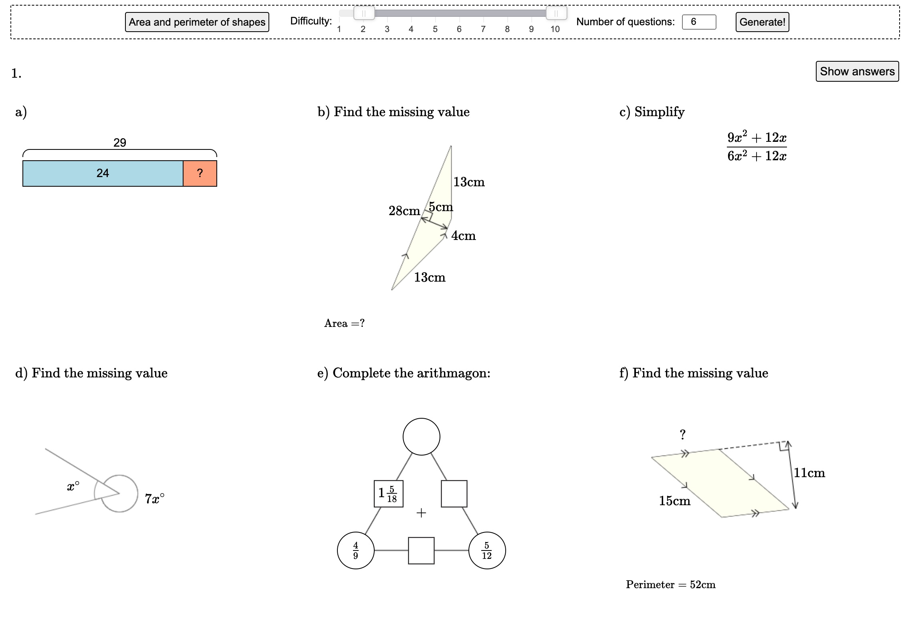
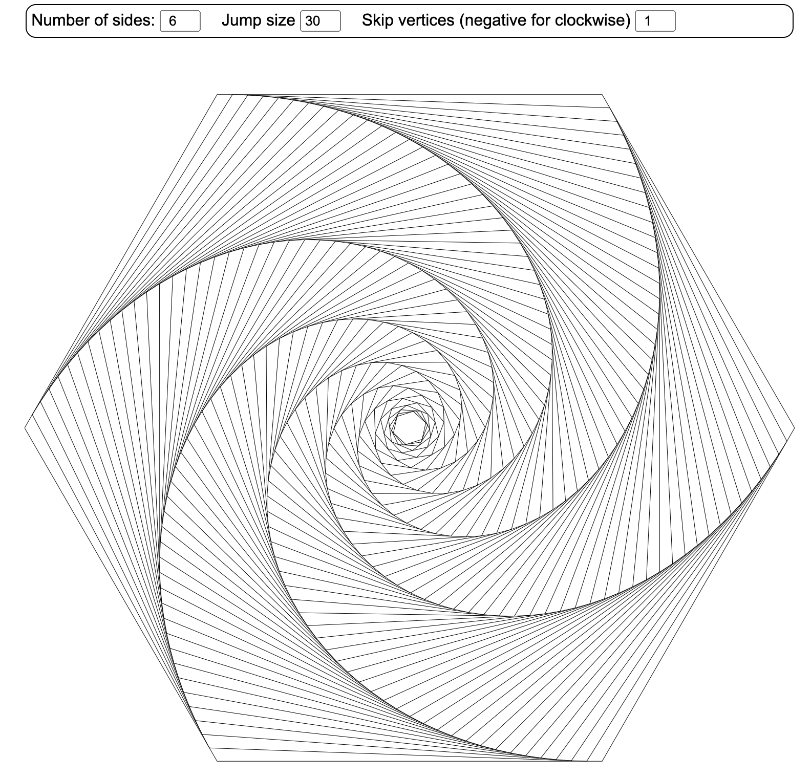

Question generator
Animations/image generators etc.
Chaos fractals
Curves of pursuit
Triangles
Random(ish) walks
Individual question generators (old)
Missing angles
Area and perimeter
Arithmagons
Equation of a line from two points
Algebraic fractions